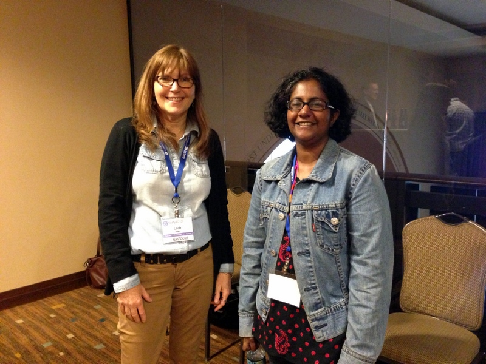
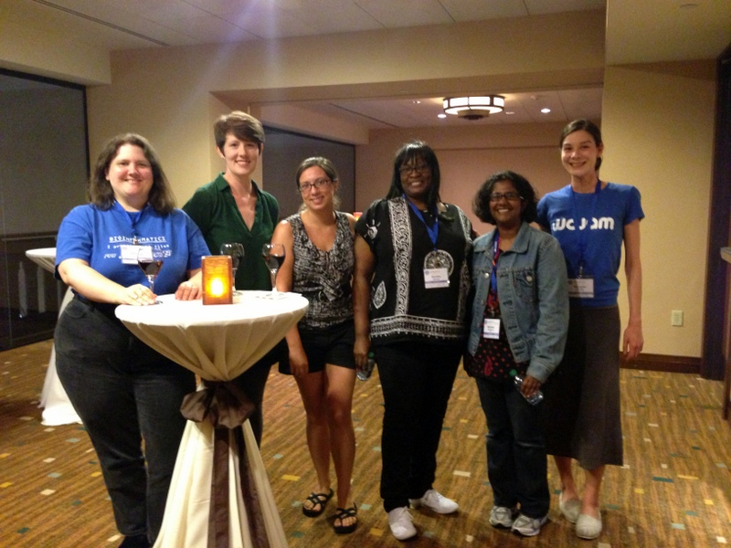
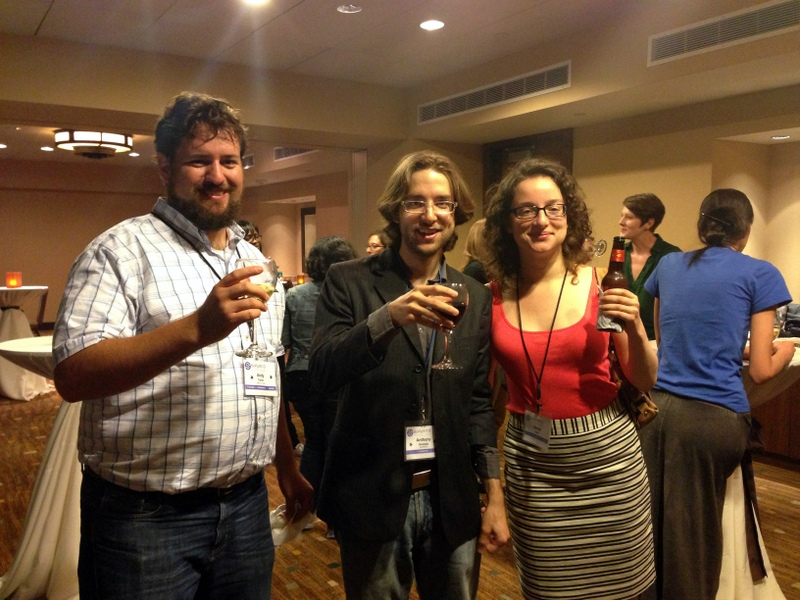
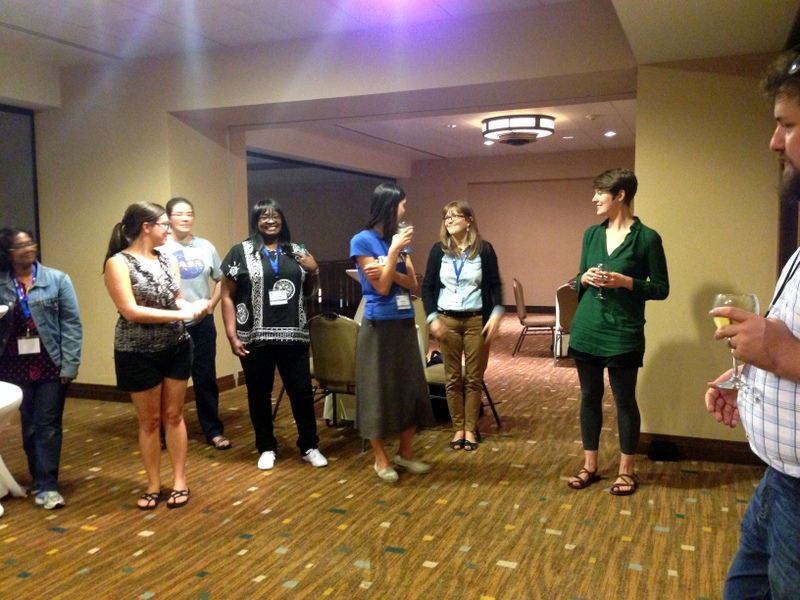
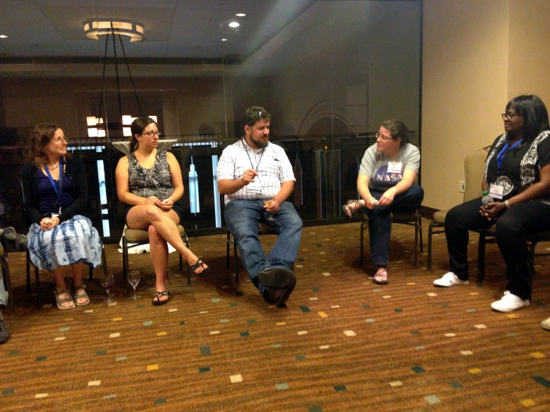
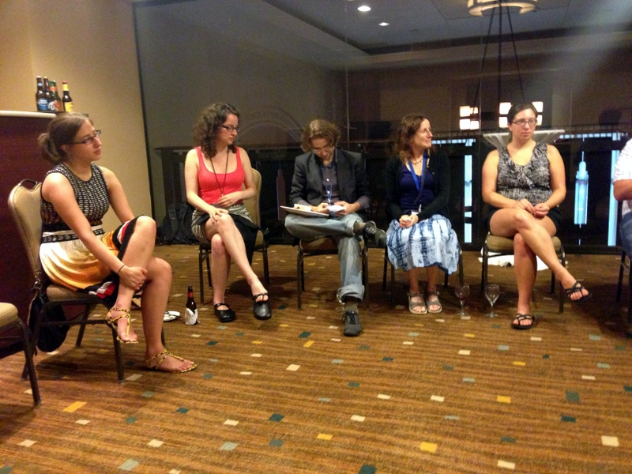

 
As in other computing fields, women make up a small percentage of the people in scientific computing. In order to bring together the women at the SciPy conference to aid in building community and to discuss related issues, a mixer was held during one of the evening Birds of a Feather sessions, moderated by SciPy Conference co-chair Andy Terrel and attendee Kristen Thyng. The mixer was co-sponsored by generous support from NumFOCUS, the Python Software Foundation, and the SciPy conference.
Approximately three women attended SciPy 2012. In 2013, there was a substantially higher representation of women, with about 35 women or 10% of the participants between the tutorials, the conference, and the sprints. However, this number is still low, and more elucidating is how the numbers break down by participation activity. More detailed numbers for female participation are as follows, noting that some of these numbers are exact and some are rough best estimates since demographic information was not gathered from conference participants:
 
Soon after arriving at the event, people became acquainted with each other and started chatting. There was a good number of people at the mixer to meet new people but still have a chance to meet everyone. There were, all together, 16 people at the mixer: 13 women and 3 men.
Eventually, the group formed a circle in order to have a chance to have a discussion. The discussion covered many topics. Specific special interest groups for women in computing were brought up and women attending the mixer had positive things to say about the groups. In fact, many of them were attending the conference due to encouragement from PyLadies. They found that PyLadies was a less intimidating way to meet and talk and learn about Python than a regular Meetup group. In particular, some women found the Learn Python group to be helpful.
For helping to get women (and men) who are already interested in computing to learn more and therefore be able to participate more in a conference like SciPy, it was suggested to have a separate tutorials and talk track for introductory material, and have proper tools for self-assessment to make sure participants can correctly choose their path.
When asked whether a separate women’s track at the conference would be desirable, participants said that they would not like this because they would rather be able to attend whatever track best fit their interests, and would not like to be singled out when it came to the research material itself.
Mentorship at the next SciPy between women (and possibly men) who have previously attended a SciPy (or related) conference was suggested to help new participants feel more comfortable in what might be a new community.
It was brought up that few iPython (and other package) contributors are women. Possible reasons suggested to explain this included that women may not feel comfortable contributing when men are aggressive and blunt. This is something that could be addressed by increased understanding and awareness on all sides.
The conference Code of Conduct was brought up as was how prominent to make the statement and how best to preempt any potential problems. Participants agreed that having previously established rules for how to deal with problems was worth any time that was spent on it.
It was unanimous that people at the SciPy conference had been accepting and friendly to everyone.
A question brought up was how to get more women involved with conference planning, which could then in turn help the conference be more inclusive and diverse in the future, keeping in mind that sometimes women are cautious not to be stuck “just” planning and organizing, which could be considered a traditionally female task.
To get more women to attend SciPy and submit abstracts, people thought that helping with the process could be beneficial. This sort of support would be most logical to come from a group like PyLadies.
 
Various organizations were suggested as being helpful to seek out, including:
A general suggestion for getting more people to SciPy was to have differentiated funding for people coming from companies versus those who are paying their own way (and are not academics).
Overall, a good time was had by all and it was very enjoyable meeting and discussing with a small group of like-minded individuals. Having these sorts of discussions could be helpful in having a more diverse set of scientific coders over time! For more information about this event, contact Andy Terrel at andy.terrel [at] gmail.com or Kristen Thyng at kthyng [at] gmail.com.